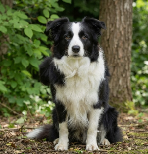

Border Collie
Il Border Collie è universalmente considerato il cane più intelligente e ricettivo del regno canino. Originario della regione di confine tra Scozia e Inghilterra, è nato come instancabile conduttore di greggi ed è celebre per il suo sguardo magnetico, con cui guida e controlla il bestiame.
Dotato di un'energia inesauribile e di una straordinaria voglia di collaborare, è il compagno ideale per persone dinamiche, amanti dello sport e delle attività all'aria aperta che desiderano instaurare una profonda intesa mentale con il proprio cane.
Caratteristiche
Tempo e Routine

Fabbisogno altissimo di esercizio fisico intenso e continui stimoli mentali.
Cura e Impegno
Spazzolature regolari per il doppio mantello e gestione della muta stagionale.
Valutazione dello spazio
Preferisce case con giardino o accesso frequente a grandi spazi aperti.
Maggiori informazioni
Pro e Contro
- Intelligenza strabiliante e straordinaria capacità di apprendimento
- Partner eccezionale per sportivi, escursionisti e appassionati di agility
- Profonda dedizione e legame empatico verso il proprio conduttore
- Non adatto a persone sedentarie o che passano troppe ore fuori casa
- Forte istinto predatorio/pastorale (può tentare di radunare bici o persone)
- Rischio di sviluppare comportamenti ossessivi se poco stimolato mentalmente
Momenti ed espressioni



Palette di colori